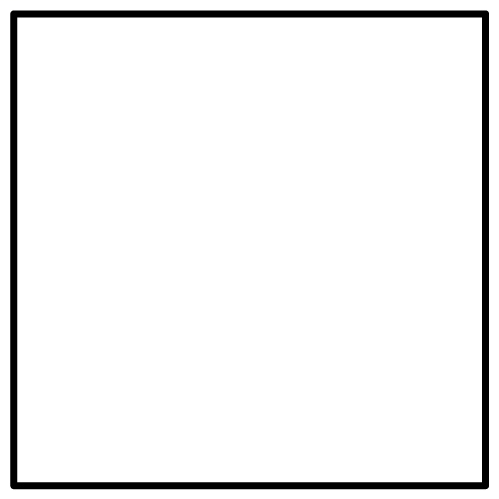
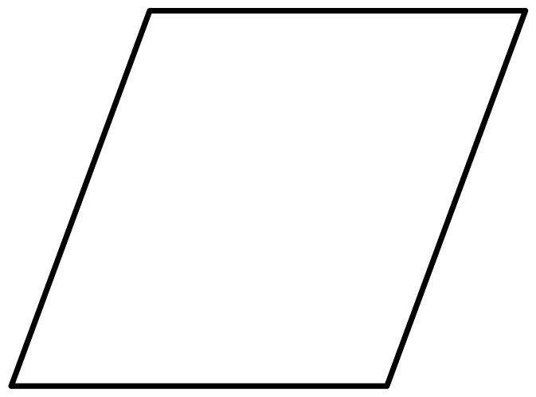
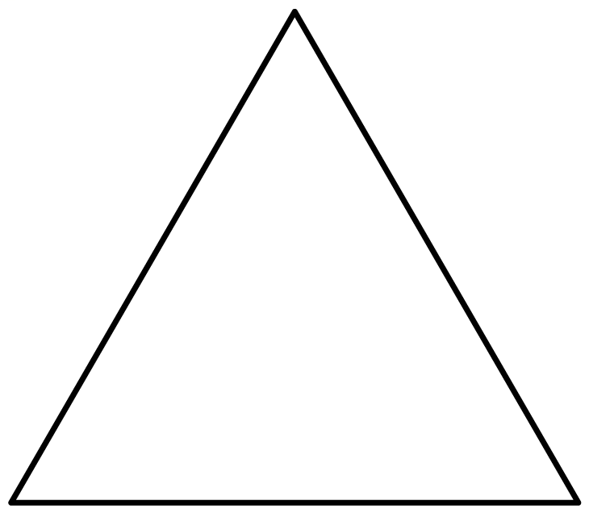
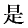
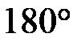

2023年北京中考数学 第2题 解析
2. 下列图形中，既是轴对称图形又是中心对称图形的是（ ）
A.

B. 
C.  D.
D. 
【答案】A
【解析】
【分析】根据轴对称图形，中心对称图形的定义进行判断即可．
【详解】解：A既是轴对称图形又是中心对称图形，故符合要求；
B不是轴对称图形，是中心对称图形，故不符合要求；
C

轴对称图形，不是中心对称图形，故不符合要求；D是轴对称图形，不是中心对称图形，故不符合要求；
故选：A．
【点睛】本题考查了轴对称图形，中心对称图形，解题的关键在于熟练掌握：在平面内，把一个图形绕着某个点旋转

，如果旋转后的图形能与原来的图形重合，那么这个图形叫做中心对称图形；在平面内，一个图形沿一条直线折叠，直线两旁的部分能够完全重合的图形叫做轴对称图形．